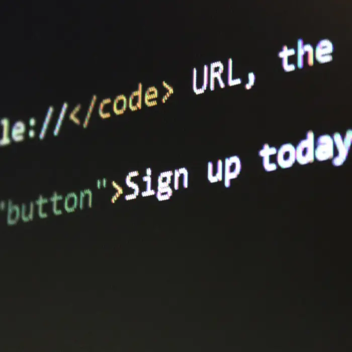
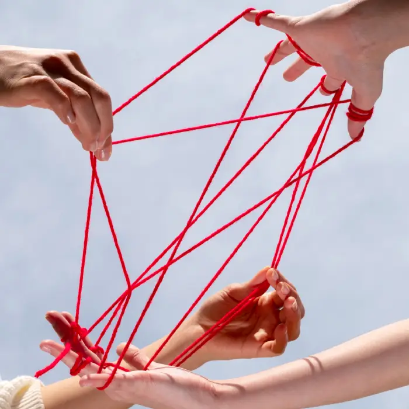
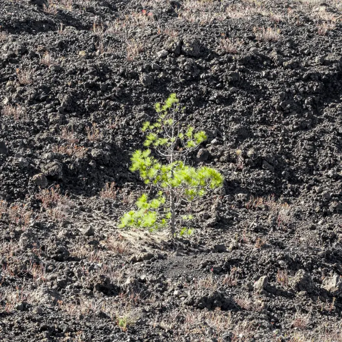
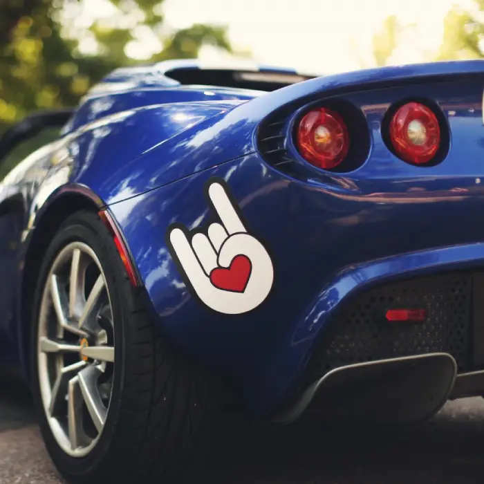

-
Фритрек и нулевой спринт: Подготовка к работе
УдарЭто было самое начало пути. На этом этапе важно было проникнуться основами и настроиться на учёбу. И, возможно, подумать, как новые знания могут повлиять на ваше будущее.
Показалось, что я прямо огого какой крутой скиловый чел — и возможно, мне даже будет скучновато. Но момент прощания с иллюзиями наступил быстро.
-
1 спринт: Я — чистый лист
Старт
На первых этапах мы работали со страхами и сомнениями, которые часто испытывают новички. Один из них — страх перед чистым листом. Это, конечно же, намного сложнее, чем боязнь куска бумаги. Часто за этим ощущением скрываются более глубокие вопросы: с чего начать? а вдруг будет слишком сложно? что, если я не справлюсь?
Я отлично помню этот страх пустого редактора. Казалось, что любое движение будет ошибкой. Но первый написанный селектор и увиденный результат придали сил.
-
1 спринт: А если не получится?
ЭйфорияПервый проект — позади! Но это всё ещё самое начало пути. Радость могла быстро померкнуть и смениться ожиданием провала. Или вы, наоборот, могли вдохновиться успехами и поверить в себя.
Я, наоборот, дико воодушевился! "У меня получилось — значит, получится и всё остальное". С этой мыслью я и пошёл во второй спринт.
-
2 спринт: Погоня за идеалом
СтопНа этом этапе вы уже достаточно разбирались в основах вёрстки, чтобы понять, как много ещё впереди. Вы могли попытаться погнаться за идеалом и понять, что он недостижим. А, может, вы вовсе и не подвержены перфекционизму и вместо того, чтобы сделать идеально, старались просто сделать.
Я быстро осознал, что перфекционизм тормозит. Старался ловить себя на желании выверять мелочи и вовремя говорить: "Стоп, этого достаточно".
-
2 спринт: О тех, кто рядом
Опора
Всё это время вы были не одиноки (хотя, возможно, иногда и чувствовали, что одни против целого мира). Вас окружали одногруппники, команда сопровождения и просто близкие люди, которым можно пожаловаться, если очередной макет просто так не поддавался. Осваивать что-то новое легче, когда рядом есть единомышленники, не правда ли?
Очень помогали воркшопы, чат с наставником и вопросы моих одногруппников. Ну и вся команда поддержки Яндекс.Практикум — без них было бы в разы сложнее.
-
3 спринт: Обходные стратегии
ПерезагрузкаНа этом курсе вы постоянно решали разные задачи. В какой-то момент вам могло показаться, что решения просто иссякли. Значит, пришло время посмотреть на задачу под другим углом.
Помню момент, когда мозг отказался соображать. Пришлось отойти от ноутбука, нарисовать схему на бумаге — и вдруг щёлкнуло!
-
3 спринт: Когда опускаются руки
Стена
Во время учёбы часто возникает чувство, когда не знаешь, за что хвататься. Вроде и проектную пора сдавать, и задачи хочется порешать, и в теории получше разобраться, и жизнь не забыть пожить. В такие моменты очень нужна концентрация. Вспомните, откуда вы её черпали.
В третьем спринте я словил жёсткое выгорание: домашка, проектная, работа — всё смешалось. Спасали 15-минутные прогулки и жёсткий тайм-менеджмент. Хотелось выдохнуть после, но на порог уже стучался четвёртый спринт.
-
«Сейчас я здесь»
Путь
Сейчас вы уже очень много знаете о вёрстке. Но это только начало. Во-первых, впереди ещё много материала про «красотищу». Во-вторых, с окончанием курса учёба не заканчивается. Вёрстка — это целый мир. И этот мир постоянно меняется. Познать его полностью не получится, но это тот случай, когда важен сам процесс познания. Ведь часто путь — и есть результат.
Я знаю, что путь только начался, но я уже не боюсь чистого листа. Я знаю, с какой стороны к нему подойти.